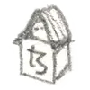
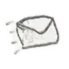

every person living in my sketchbooks
or...
every person I have ever met
...or could never meet
...or maybe a humble celebration of diverse human authenticity
 "every person" is an open ended series of peculiar animated people created by aulerius, each minted as a single edition artwork on tezos blockchain (objkt.com collection). In addition, one may become curious about a particular person which prompts the author to look into them deeper and create a detailed illustration, minted on Versum.
To send a request of curiosity about a particular person, one must have that person token residing in their tezos adress. Upon completion, the Requester also receives an edition of that persons "curious about" illustration. (gifted!) Currently you can arrange that by contacting the author directly, however if all goes well, the plan is to setup UI for that, wallet sync, and visible queue of requests on this website. Wish me luck!
To send a request of curiosity about a particular person, one must have that person token residing in their tezos adress. Upon completion, the Requester also receives an edition of that persons "curious about" illustration. (gifted!)
Currently you can arrange that by contacting the author directly, however if all goes well, the plan is to setup UI for that, wallet sync, and visible queue of requests on this website. Wish me luck!